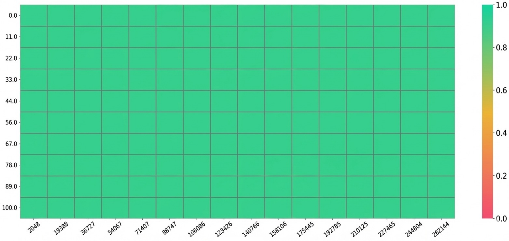
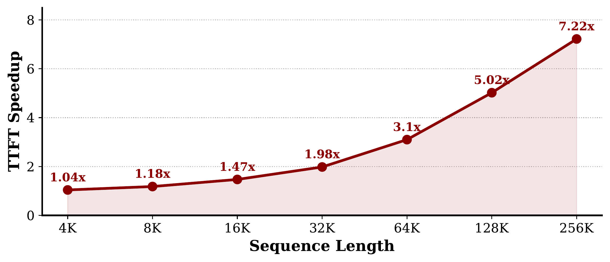
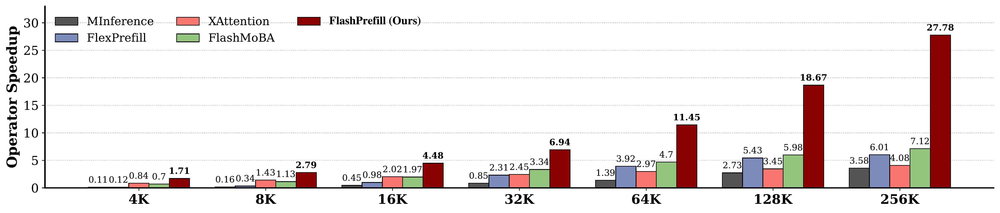
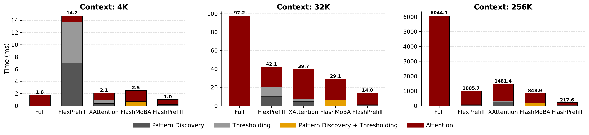
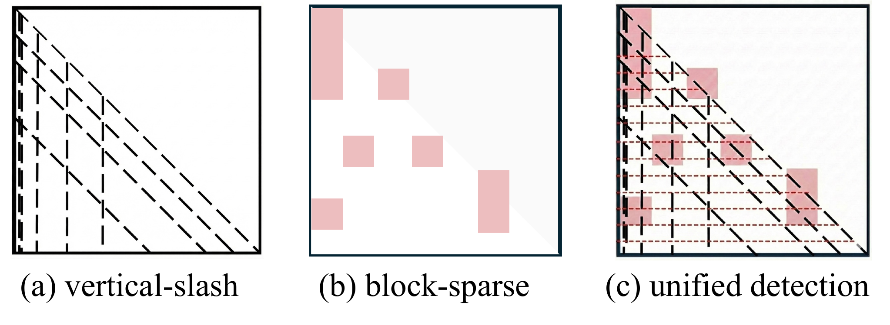
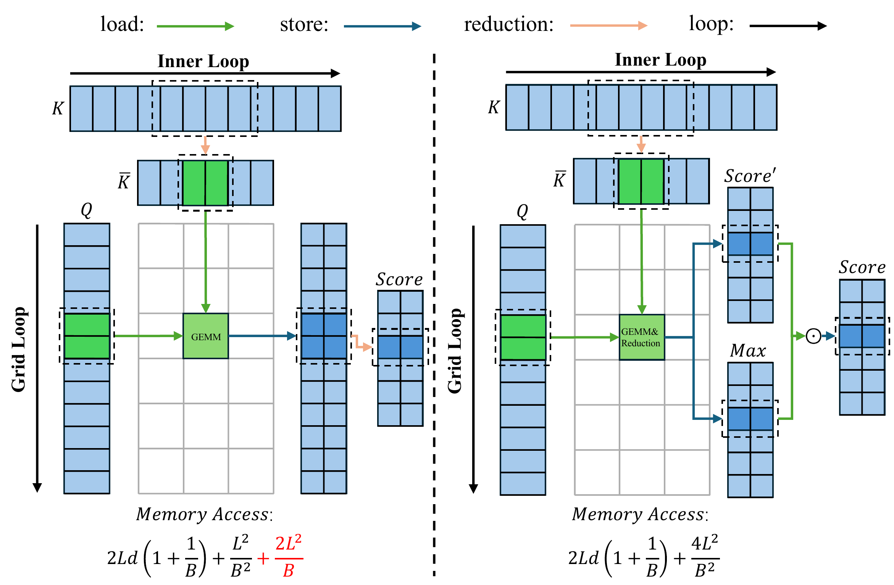
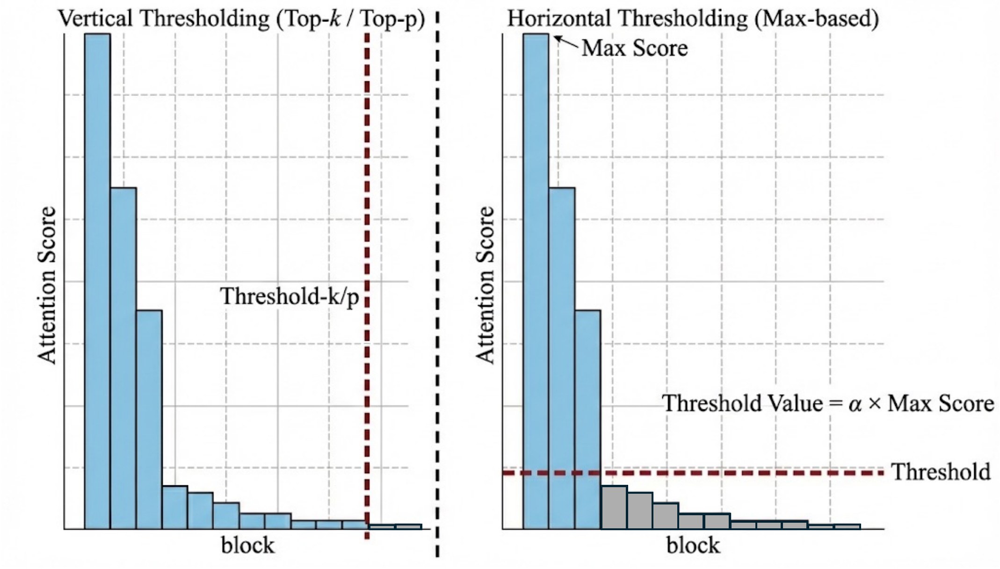

长上下文建模是大型语言模型（LLM）的关键能力，但注意力机制的二次复杂度仍然是一个关键瓶颈，特别是在计算密集的预填充（prefill）阶段。虽然已经探索了各种稀疏注意力机制，但它们通常会遇到显著的搜索延迟或稀疏性不足的问题。在本论文中，我们提出了FlashPrefill，这是一个通过即时模式发现和阈值化实现超快速预填充的框架。FlashPrefill利用快速块搜索技术同时定位动态垂直、斜线和块稀疏注意力模式。关键在于它引入了一种动态阈值化机制，能够在避免排序或累积注意力分数的高开销同时，有效消除长尾分布以增强稀疏性。广泛的评估表明，FlashPrefill在效率上实现了实质性飞跃，在256K序列上提供了前所未有的27.78倍加速。值得注意的是，与现有方法在不同上下文中可能出现效率下降不同，FlashPrefill即使在4K上下文长度下也能保持1.71倍的加速，证明了其在不同序列规模下的鲁棒性和实用价值。
| 项目 | 内容 |
|---|---|
| 论文 ID | 2603.06199 |
| 标题 | FlashPrefill: Instantaneous Pattern Discovery and Thresholding for Ultra-Fast Long-Context Prefilling |
| 作者 | Qihang Fan, Huaibo Huang, Zhiying Wu, Juqiu Wang, Bingning Wang, Ran He |
| 单位 | $^{1}$MAIS&NLPR, CASIA; $^{2}$UCAS; $^{3}$WeChat, Tencent |
| 会议/期刊 | arXiv |
| 原文保存位置 | ~/.openclaw/workspace/papers/20260309_FlashPrefill/source/ |
| 报告生成日期 | 2026-03-10 |
近年来，大型语言模型（LLM）快速发展，涌现出许多高性能模型服务于广泛的用户群体。然而，由于自注意力机制固有的二次复杂度，LLM在处理长上下文序列时往往会产生极高的时间开销。这个瓶颈在计算密集的预填充阶段尤为明显。
为了缓解这些挑战，人们提出了各种稀疏注意力机制。这些方法通常遵循一个一致的基本原则：先对注意力分数进行粗粒度估计，以识别显著的块或结构模式（如垂直或斜线状条纹），然后通过Top-$k$或Top-$p$等选择策略将细粒度注意力计算限制在关键token上，从而在保持最大信息保真度的同时有效加速长上下文预填充。
尽管如此，现有方法仍有很大的效率提升空间。首先，对注意力分数的粗粒度估计通常会引入不可忽视的计算延迟。其次，Top-$k$或Top-$p$选择策略需要对注意力分数进行显式排序（全局或局部），在现代GPU架构上产生很高的开销。Top-$p$方案甚至需要对分数分布进行累积求和，这是一个本质上是序列化的过程，难以并行化，导致显著的端到端延迟。最后，Top-$k$和Top-$p$启发式方法难以有效剪枝影响很小的token的长尾分布，导致稀疏性不完整和持续的冗余计算。
基于这些考虑，我们提出了FlashPrefill，这是一个针对长上下文场景的超快速预填充加速框架。FlashPrefill具有即时模式发现阶段，能够准确识别垂直、斜线和块稀疏等流行注意力结构。为了克服发现阶段通常伴随的高延迟，我们引入了一种专门优化计算内核的块近似策略。通过这种块级近似简化内存访问并并行化发现过程，FlashPrefill将发现开销降低到可忽略的水平，使模型能够以极高的效率感知全局注意力分布。
此外，FlashPrefill摒弃了传统的Top-$k$或Top-$p$块选择方法——这些方法常常受到显著排序延迟和计算复杂性的瓶颈。相反，它使用更高效的基于最大值的动态阈值化方法。这种方法不仅能简化显著块的识别，还能自适应地解决由注意力分数重尾分布导致的"稀疏性不完整"问题。通过有效过滤冗余块而无需穷举排序，FlashPrefill确保了更彻底的稀疏表示，从而在保持强劲模型性能的同时实现显著的预填充加速。
我们在多种大型语言模型（LLM）和视觉语言模型（VLM）上评估了FlashPrefill，结果全面凸显了其卓越性能。以Qwen3-30B-A3B-Instruct-2507（支持最大256K上下文长度）为例，FlashPrefill展现出显著优势：即使在相对较短的4K序列长度下，仍能实现1.71倍的加速。当序列长度扩展到256K时，FlashPrefill实现了惊人的27.78倍加速。此外，我们将FlashPrefill集成到vLLM推理框架中测量了端到端的Time to First Token（TTFT）。FlashPrefill实现了最大7.22倍的端到端加速。Qwen3的"大海捞针"测试结果表明，FlashPrefill在保持几乎相同模型性能的同时，准确率损失可以忽略不计。
主要贡献总结如下：

图 1：使用FlashPrefill对Qwen3-30B-A3B-Instruct-2507进行"大海捞针"测试，上下文长度从2K到256K不等。 :::
图 2：在vLLM框架内，相对于全注意力在Qwen3-30B-A3B-Instruct-2507上的端到端Time-to-First-Token (TTFT)加速。 :::
图 3：各种算子相对于Flash Attention在Qwen3-30B-A3B-Instruct-2507上的比较加速。FlashPrefill展现出主导优势，特别是在长上下文场景中。 :::
图 4：不同方法各部分的执行时间。所有结果均在Qwen3-30B-A3B-Instruct-2507上测量。 :::大型语言模型：近年来，大量大型语言模型（LLM）的出现推动了学术界和工业界的快速进步。此外，LLM中固有的丰富先验知识可用于增强视觉语言模型（VLM），促进智能多模态智能体的构建。除了基于全注意力的经典Transformer架构外，现代LLM中还涌现出许多新架构，以减轻处理长上下文时全注意力产生的高昂计算开销，如稀疏注意力和线性注意力。
稀疏注意力：作为Transformer架构的关键组成部分，注意力机制在捕获依赖关系方面起着至关重要的作用。然而，其二次复杂度导致显著的计算开销，特别是在长上下文场景中。为此，人们提出了大量稀疏注意力机制来降低注意力层的计算成本。虽然其中一部分方法需要显式的模型训练或微调，但其他方法则作为无需训练的方法，可以无缝集成到现有LLM中。
根据先前的研究，我们确定了LLM中固有的三种主要稀疏模式：垂直、斜线和块稀疏。大多数现有方法依赖于基于搜索的策略来确定每个注意力头的特定模式，这通常会引入额外的计算分析开销。相反，非基于搜索的替代方案通常需要更密集的计算和维持密集的注意力分数矩阵，导致显著的计算和内存访问成本。
为了促进注意力图中稀疏模式的快速识别，我们对各种稀疏结构进行了定性分析。如图所示，一组均匀分布的查询足以同时解决垂直、斜线和块稀疏模式。我们将这种方法的成功归因于以下三个结构特性：
基于这些见解，我们直接使用全套查询来计算针对所有key的注意力分数。为了确保最大准确性，我们选择这种穷举方法来精确识别显著块。
然而，直接在长序列上进行query-key交互在计算上是不可行的。为了优化，我们使用平均池化的key $\bar{k} = \frac{1}{n}\sum_{k_i \in \mathcal{B}} k_i$ 作为块级代理。这种方法基于LLM嵌入空间中固有的语义局部性和局部连贯性，其中局部块内的token表现出高度相似的特征和冗余的注意力模式。从数学上讲，设块 $\mathcal{B}$ 由 $n$ 个key $\{k_1, \dots, k_n\}$ 组成，对数为 $x_i = q \cdot k_i$。我们定义探测分数 $\Psi_{\text{pool}}$ 和真实贡献 $\Psi_{\text{sum}}$ 如下：
$$\Psi_{\text{pool}} = \exp(q \cdot \bar{k}) = \exp\left( \frac{1}{n} \sum_{i=1}^n x_i \right) = \left( \prod_{i=1}^n e^{x_i} \right)^{1/n} = \text{GM}(e^{x_1}, \dots, e^{x_n})$$ $$\Psi_{\text{sum}} = \sum_{i=1}^n e^{x_i} = n \cdot \text{AM}(e^{x_1}, \dots, e^{x_n})$$其中 $\text{GM}(\cdot)$ 和 $\text{AM}(\cdot)$ 分别表示几何平均和算术平均。根据AM-GM不等式：
$$\frac{1}{n} \Psi_{\text{sum}} \geq \Psi_{\text{pool}}$$虽然 $\Psi_{\text{pool}}$ 作为下界，但由于注意力分布的低块内方差（$\sigma^2 \to 0$），块之间的排名顺序不变。在这种情况下，GM作为AM的严格单调代理，确保块的相对顺序保持不变，排名失真可以忽略不计。在计算单个查询的注意力分数后，我们对每个块内的所有查询进行第二次平均操作，以得出聚合的块级重要性。

图 5：模式发现示意图。红色虚线表示均匀分布的查询。 :::然而，上述方法在计算块内注意力平均值时仍然需要存储和计算一个巨大的 $L \times (L/B)$ 中间矩阵，其中 $B$ 是块大小。为了解决这个问题，我们再次利用同一块内token的语义相似性。鉴于局部块中的token表现出显著的一致性，它们产生的注意力分布高度冗余。基于这一考虑，我们不再进行计算昂贵的严格注意力计算，而是采用块级注意力分数近似。具体来说，我们实现了一个融合的2D归约内核，将计算从显式的"先计算后池化"序列转变为单次传递的融合内核，显著减少了全局内存流量。
融合块级注意力近似：为了避免严格的token级计算的高昂成本，我们放弃精确注意力，转而采用块级近似。通过将查询块大小设置为与块大小相等（$B$），内核计算查询块与池化key块之间的交互（其中块中的每个key由单个向量 $k_J$ 表示）。我们对查询维度执行1D归约，将细粒度分数压缩为GPU SRAM中每个块对的一个近似标量：
内核沿查询块维度执行求和，为每个块对 $(I, J)$ 产生近似的能量分数 $\mathcal{S}_{I,J}$ 和局部最大值 $m_{I,J}$。
保持一致性的全局归一化：虽然使用局部最大值稳定了块级近似 $\mathcal{S}_{I,J}$，但这些分数必须对齐以确保序列中的全局可比性。我们执行全局归一化传递，将这些近似值转换为统一的重要性图：
这个融合过程确保了生成的块级图准确地反映了相对注意力分布，同时将内存占用从 $O(L \cdot L/B)$ 减少到 $O((L/B)^2)$。通过丢弃严格计算来换取这种高保真近似，即使对于超长序列也能实现近乎即时的模式发现。

图 6：块评分方法比较。（左）具有显式注意力分数实现的standard kernel。（右）我们使用块级注意力近似的优化内核。与标准实现相比，我们提出的块级注意力分数近似通过绕过 $O(L^2/B)$ 的中间内存流量显著减少了内存访问开销。这里 $L$ 表示序列长度，$B$ 表示块大小，$d$ 表示token维度。 :::与我们先前方法相比，我们提出的方法既更快又更准确。基于Llama-3.1-8B-Instruct，我们比较了三种不同的模式发现方法：1) 对query和key块都应用平均池化，然后计算块间注意力分数；2) 使用第3.1节中描述的原始方法，不含第3.2节中描述的任何块近似；3) 我们提出的基于块近似的的方法。
结果如下表所示。我们在RULER基准上进行了评估；为了确保不同模式发现方法之间的公平比较，我们一致地选择得分最高的8个块。方法1）由于其过于激进的估计策略而遭受显著的性能下降。相比之下，方法2）由于过多的内存访问成本而产生大量时间开销。我们提出的方法3）在效率和有效性之间取得了最佳平衡。
| 方法 | 4K | 16K | 64K | 4K | 16K | 64K |
|---|---|---|---|---|---|---|
| 1) | 63.12 | 47.23 | 24.32 | 0.20ms | 0.22ms | 0.63ms |
| 2) | 87.69 | 83.12 | 73.26 | 0.68ms | 2.48ms | 18.26ms |
| 3) | 93.12 | 87.13 | 76.08 | 0.22ms | 0.28ms | 2.21ms |
表 1：不同模式发现方法的比较。
先前的方法依赖Top-$k$或Top-$p$启发式来选择显著的token或块。然而，这些方法需要相对昂贵的排序和累积计算，在效率方面并不是最优的。
此外，Top-$p$和Top-$k$机制由于对长尾分布的高度敏感性而遭受稀疏性不足的问题。如图所示，当注意力分数分布遵循长尾分布（在大多数场景中很常见）时，这些方法经常需要包含大量不显著的块来满足固定的$k$或$p$约束，从而无法实现最佳的剪枝效率。

图 7：不同阈值化方法的比较。（左）Top-$k$和Top-$p$选择策略。（右）我们提出的基于最大值的阈值化。Top-$k$和Top-$p$方法往往容易受到长尾分布的影响，因为它们可能包含许多低显著性块只是为了满足固定的$k$或$p$约束。相比之下，我们的动态阈值化有效地减轻了长尾的影响，通过更精确地选择显著块来实现更高的稀疏性。 :::为了克服这些限制，我们引入了一种基于最大值的动态阈值化机制。具体来说，对于第$I$个查询块，我们识别所有候选key块中的峰值注意力分数，并直接从该最大值导出剪枝阈值：
$$\text{thresh}_I = \alpha \cdot \max_{J \le I}(\text{Score}_{I, J})$$其中 $\alpha$ 是一个可调的比例因子。对于查询块 $I$，任何分数低于 $\text{thresh}_I$ 的key块 $J$ 将从计算中丢弃。关键的是，这种方法只需要一次传递的最大归约，而不是计算昂贵的全局排序，显著提高了执行效率。此外，如图所示，这种动态阈值化有效地减轻了长尾分布的干扰，通过仅关注真正显著的块来实现优于传统启发式的稀疏性。
| 密度 | 方法 | 4K | 8K | 16K | 32K | 64K | 128K | 256K | 512K |
|---|---|---|---|---|---|---|---|---|---|
| 60% | BlockSparse | 1.27ms | 4.16ms | 15.29ms | 59.39ms | 235.67ms | 940.09ms | 3751.57ms | 14990.36ms |
| Ours | 0.72ms | 2.80ms | 10.81ms | 43.01ms | 172.05ms | 689.80ms | 2757.41ms | 11256.11ms | |
| 6% | BlockSparse | 0.43ms | 0.55ms | 1.61ms | 6.14ms | 24.48ms | 94.68ms | 383.46ms | 1513.66ms |
| Ours | 0.14ms | 0.23ms | 0.98ms | 4.20ms | 17.31ms | 68.48ms | 278.69ms | 1109.44ms |
表 2：块稀疏注意力实现的延迟比较。
在获得查询和key块之间的稀疏模式后，FlashPrefill在这些块上执行标准块稀疏注意力。在先前的工作中，这个计算主要基于Block-Sparse-Attention代码库实现。
然而，我们观察到Block-Sparse-Attention仓库的实现未能充分利用稀疏执行的潜在效率。该仓库对被mask的块采用逻辑跳过策略：其内循环无差别地遍历key块的整个线性范围，使用条件分支来跳过被mask区域的GEMM操作。即使一个块被mask并且其矩阵乘法被绕过，线程执行流程仍然必须获取、解码并执行该迭代中的循环控制逻辑、指针算法和同步原语。这种冗余指令流开销导致显著的流水线未充分利用，有效地将内核的整体吞吐量作为序列长度增加的瓶颈。
为了进一步推动块稀疏注意力的性能边界，我们优化了其执行模型。具体来说，我们放弃了遭受指令流开销的逻辑跳过策略，实现了索引驱动的物理跳转机制。通过直接将内存指针重定向到显著块坐标，我们的方法消除了冗余控制流处理和同步暂停，从而在长序列场景中最大化硬件吞吐量和计算强度。
为了验证FlashPrefill的有效性，我们进行了全面的实验。我们在两个广泛使用的长上下文基准上验证了其在LLM中的性能：RULER和InfiniteBench。此外，我们通过在VideoMME基准上的评估展示了其在VLM中的通用适用性。此外，我们进行了消融研究，以调查各个模块对模型有效性和执行效率的影响。详细的超参数配置在附录中提供。
基线：对于LLM，我们在三个不同的模型上评估了FlashPrefill的性能：Llama-3.1-8B-Instruct、Qwen2.5-7B-Instruct和Qwen3-30B-A3B-Instruct-2507。为了进行比较，我们选择Full Attention、MInference、FlexPrefill（$\gamma=0.9, \tau=0.1$）、XAttention（$Stride=16, \tau=0.9$）和FlashMoBA（$B=128, topk=8$）作为基线。所有基准和效率指标在相同的超参数设置下测量。对于VLM，我们选择Qwen2.5-VL-7B-Instruct和Qwen3-VL-30B-A3B-Instruct进行评估。每个基线的超参数与LLM评估中使用的相同。所有效率指标均在NVIDIA H20 GPU上测量。
InfiniteBench：下表呈现了各种模型和方法在InfiniteBench基准上的结果。可以观察到，FlashPrefill在密集模型和专家混合（MoE）模型上都始终如一地实现优于其他基线的性能。
| 方法 | En.Sum | En.QA | En.MC | En.Dia | Zh.QA | Code.Debug | Math.Find | Retr.PassKey | Retr.Number | Retr.KV | Avg |
|---|---|---|---|---|---|---|---|---|---|---|---|
| Full | 32.04 | 25.93 | 69.00 | 21.00 | 31.75 | 18.02 | 25.14 | 99.32 | 99.66 | 62.00 | 48.39 |
| MInference | 32.04 | 21.94 | 64.63 | 14.50 | 31.75 | 5.33 | 27.43 | 56.61 | 78.31 | 14.00 | 34.65 |
| FlexPrefill | 30.42 | 24.82 | 68.41 | 15.50 | 32.46 | 16.75 | 31.14 | 95.64 | 99.83 | 44.00 | 45.90 |
| XAttention | 30.10 | 24.79 | 68.56 | 15.50 | 32.28 | 13.71 | 27.14 | 92.54 | 93.90 | 39.00 | 43.75 |
| FlashMoBA | 14.56 | 12.82 | 26.20 | 5.00 | 14.29 | 2.03 | 11.14 | 44.24 | 43.05 | 0.00 | 17.33 |
| FlashPrefill | 32.04 | 25.07 | 67.69 | 16.50 | 31.22 | 16.75 | 24.86 | 96.10 | 97.97 | 55.00 | 46.32 |
| Full | 17.48 | 5.13 | 44.54 | 15.50 | 8.99 | 18.53 | 34.00 | 0.34 | 94.24 | 0.00 | 23.87 |
| MInference | 16.50 | 3.70 | 39.74 | 12.50 | 7.94 | 16.24 | 24.29 | 6.78 | 91.36 | 0.00 | 21.90 |
| FlashPrefill | 20.39 | 4.84 | 47.16 | 10.50 | 8.99 | 13.20 | 37.43 | 11.19 | 95.59 | 0.00 | 24.93 |
| Full | 33.01 | 27.35 | 65.94 | 32.50 | 10.05 | 49.24 | 34.86 | 21.19 | 100.00 | 4.20 | 37.83 |
| MInference | 25.24 | 22.79 | 59.83 | 17.50 | 7.41 | 33.50 | 30.29 | 22.37 | 92.37 | 6.80 | 31.81 |
| FlashPrefill | 33.01 | 23.36 | 63.76 | 19.50 | 9.52 | 34.77 | 36.57 | 33.22 | 100.00 | 8.60 | 36.23 |
表 3：InfiniteBench上不同模型和方法的性能比较。
RULER：下表呈现了不同方法在RULER基准上跨不同模型的结果。表格左侧显示RULER分数，右侧报告相对于全注意力在不同序列长度下的算子加速。与之前的方法相比，FlashPrefill在所有测试长度上实现了显著的加速。具体来说，在128K上下文长度下，FlashPrefill在三个代表性模型上分别达到了22.67倍、16.87倍和18.67倍的加速，大幅超越现有方法。
| 方法 | 4K | 8K | 16K | 32K | 64K | 128K | Avg | 4K | 8K | 16K | 32K | 64K | 128K |
|---|---|---|---|---|---|---|---|---|---|---|---|---|---|
| Full | 96.07 | 93.94 | 93.51 | 90.68 | 86.29 | 74.25 | 89.12 | 1.00× | 1.00× | 1.00× | 1.00× | 1.00× | 1.00× |
| FlashPrefill | 97.27 | 96.20 | 94.97 | 92.21 | 84.93 | 75.31 | 90.15 | 1.71× | 2.81× | 4.63× | 7.48× | 13.62× | 22.67× |
| Full | 95.21 | 93.17 | 92.18 | 90.14 | 71.87 | 25.23 | 77.97 | 1.00× | 1.00× | 1.00× | 1.00× | 1.00× | 1.00× |
| FlashPrefill | 95.37 | 93.64 | 91.98 | 88.25 | 70.45 | 34.10 | 78.97 | 1.72× | 2.73× | 4.51× | 6.02× | 10.68× | 16.87× |
| Full | 95.78 | 95.79 | 95.82 | 94.31 | 90.25 | 87.71 | 93.28 | 1.00× | 1.00× | 1.00× | 1.00× | 1.00× | 1.00× |
| FlashPrefill | 95.76 | 95.89 | 95.03 | 94.06 | 90.11 | 85.20 | 92.68 | 1.71× | 2.79× | 4.48× | 6.94× | 11.45× | 18.67× |
表 4：不同模型和方法的性能与效率比较。
VideoMME：下表呈现了各种方法在Video-MME基准上的性能。与现有的稀疏注意力方法相比，FlashPrefill实现了更优的结果。
| 方法 | Short | Medium | Long | Avg |
|---|---|---|---|---|
| Full | 75.78 | 62.33 | 53.11 | 63.74 |
| FlashPrefill | 74.78 | 61.67 | 53.22 | 63.22 |
| Full | 81.11 | 71.44 | 63.78 | 72.11 |
| FlashPrefill | 80.78 | 71.89 | 63.33 | 72.00 |
表 5：VideoMME上不同方法的性能比较。
密度：下表呈现了各种方法在Qwen3-30B-A3B-Instruct-2507上的密度。可以观察到，FlashPrefill有效地减轻了长尾分布的影响。随着序列长度增加，有效信息量相对减少；因此，与其他两种方法相比，FlashPrefill表现出显著的密度降低。
| 方法 | 4K | 8K | 16K | 32K | 64K | 128K | 256K |
|---|---|---|---|---|---|---|---|
| FlexPrefill | 20.4% | 15.4% | 14.1% | 12.3% | 10.1% | 8.4% | 8.4% |
| XAttention | 57.4% | 45.3% | 37.8% | 31.1% | 25.6% | 21.0% | 18.5% |
| FlashPrefill | 70.4% | 46.0% | 29.0% | 17.6% | 10.0% | 5.8% | 3.5% |
表 6：Qwen3-30B-A3B-Instruct-2507上各种方法的密度。
端到端TTFT加速：为了评估FlashPrefill在完整LLM预填充过程中的加速，我们将其集成到vLLM推理框架中并测量了Time-to-First Token（TTFT）。结果总结在下表中，展示了FlashPrefill在包括密集和专家混合（MoE）架构在内的三种语言模型上实现的端到端TTFT加速。与全注意力相比，FlashPrefill实现了显著的性能提升。特别是在Qwen3-30B-A3B-Instruct-2507上，它在128K序列长度下实现了5.02倍的加速。
| 方法 | 4K | 8K | 16K | 32K | 64K | 128K |
|---|---|---|---|---|---|---|
| Full | 471ms | 976ms | 2189ms | 5398ms | 14774ms | 45464ms |
| FlashPrefill | 447ms | 913ms | 1860ms | 3618ms | 7481ms | 15061ms |
| 加速比 | 1.05× | 1.07× | 1.18× | 1.49× | 1.97× | 3.02× |
| Full | 423ms | 912ms | 2048ms | 4735ms | 12563ms | 37239ms |
| FlashPrefill | 406ms | 851ms | 1707ms | 3534ms | 7323ms | 15213ms |
| 加速比 | 1.04× | 1.07× | 1.20× | 1.34× | 1.72× | 2.45× |
| Full | 267ms | 613ms | 1603ms | 4635ms | 15203ms | 53752ms |
| FlashPrefill | 257ms | 519ms | 1090ms | 2331ms | 4909ms | 10702ms |
| 加速比 | 1.04× | 1.18× | 1.47× | 1.98× | 3.10× | 5.02× |
表 7：FlashPrefill实现的端到端TTFT加速。
模式发现与阈值化：模式发现和阈值化的组合过程是稀疏注意力计算的先决条件，主要涉及两个关键考量：1）识别关键token的准确性以防止性能下降；2）执行的简单性和速度。我们在前文讨论了第一个目标，我们提出的块近似在效率和有效性之间取得了优于结构相似方法的稳健平衡。关于第二个考量，我们比较了不同方法的发现和阈值化的组合执行时间。结果明显表明，FlashPrefill在识别重要token的过程中显著快于其他方法。
不同阈值化方法：先前的方法主要使用Top-$k$或Top-$p$策略进行动态token选择；然而，这些方法在序列长度增加时极易受到长尾分布的影响。相比之下，我们基于最大值的动态阈值化消除了这种长尾分布的影响，在长上下文场景中实现了更彻底的稀疏性。下表呈现了使用不同阈值化方法的Llama-3.1-8B-Instruct在RULER基准上的性能。表格左侧报告模型分数，右侧显示相应的注意力密度。很明显，我们提出的方法在保持绝大多数模型性能的同时显著降低了计算密度，从而实现了卓越的加速。
| 方法 | 32K | 64K | 128K | 32K | 64K | 128K |
|---|---|---|---|---|---|---|
| Top-k | 91.08 | 81.67 | 70.22 | 12.5% | 12.5% | 12.5% |
| Top-p | 92.38 | 82.12 | 72.83 | 17.8% | 15.7% | 14.0% |
| Ours | 92.21 | 84.93 | 75.31 | 16.0% | 8.2% | 4.5% |
表 8：各种阈值化策略的性能分数和注意力密度。
在本论文中，我们提出了FlashPrefill，这是一种显著加速大型语言模型（LLM）长上下文预填充阶段的新方法。FlashPrefill引入了一种即时模式发现机制，进一步通过基于块近似的内核实现来最小化内存访问开销。此外，我们提出了基于最大值的动态阈值化，消除了排序和累积操作的需求，同时减轻了长尾分布的影响，从而实现了更高的稀疏性。我们对各种LLM、VLM和多样化基准的广泛评估表明，FlashPrefill在保持卓越性能的同时有效地增强了预填充效率。
即时模式发现机制：提出了一种新颖的块近似策略，通过融合2D归约内核将模式发现开销降至可忽略水平，能够快速识别垂直、斜线和块稀疏三种注意力模式。
基于最大值的动态阈值化：摒弃了传统Top-$k$/Top-$p$的高开销排序方法，仅需一次最大归约即可实现动态阈值计算，同时有效解决了注意力分数长尾分布导致的稀疏性不足问题。
优化的块稀疏注意力内核：通过索引驱动的物理跳转机制替代逻辑跳过策略，消除冗余控制流处理和同步暂停，显著提升硬件利用率。
超参数敏感性：动态阈值化的比例因子$\alpha$需要针对不同模型进行手动调优，缺乏自适应机制。
仍需保留结构化token：虽然动态阈值化提高了稀疏性，但仍需显式保留attention sink和局部窗口，无法完全端到端自动化。
实现复杂度：优化的内核实现需要针对特定硬件进行深度优化，迁移到新架构可能需要额外工作。
长上下文LLM推理：显著加速预填充阶段，适用于需要处理长文档、长对话或多模态内容的场景。
高吞吐量服务：在vLLM等推理框架中集成，提升Time-to-First-Token性能，改善用户体验。
视觉语言模型：在VideoMME等视频理解任务中同样展现有效性，具有广泛的多模态应用前景。
自适应阈值化：研究无需手动设置$\alpha$的自适应机制，根据注意力分布动态调整阈值。
更广泛的硬件支持：优化内核以支持更多GPU架构和边缘设备。
端到端联合优化：将模式发现与后续训练/微调过程结合，实现更紧密的协同优化。
报告生成时间：2026-03-10